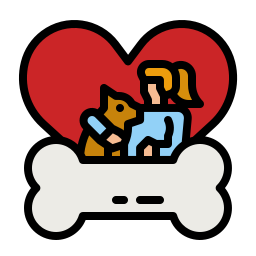
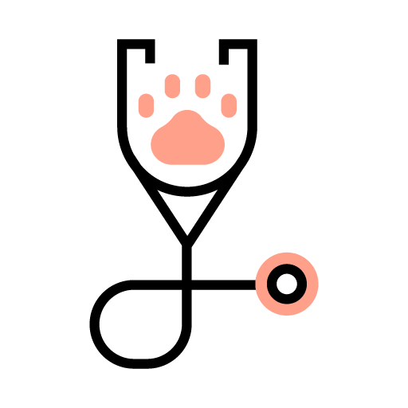
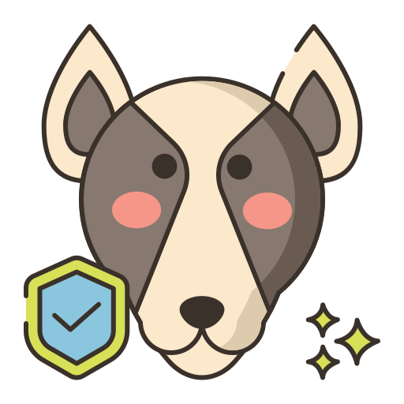

¿Por qué adoptar?

Amor Incondicional
Las mascotas adoptadas suelen mostrar un agradecimiento y lealtad inmensos.

Salvas una Vida
Al adoptar, le das una segunda oportunidad a un animal necesitado y liberas espacio en refugios.
Más Económico
Las mascotas de refugio suelen estar vacunadas, desparasitadas y esterilizadas.
Organizaciones de Adopción Recomendadas

Guardianes Caninos
Especialistas en la reubicación de perros con necesidades especiales.
Visitar WebPreguntas Frecuentes sobre Adopción
¿Cuáles son los requisitos para adoptar?
Generalmente, se requiere ser mayor de edad, presentar una identificación, comprobante de domicilio y pasar por una entrevista.
¿Qué debo considerar antes de adoptar?
Espacio disponible, tiempo para dedicarle, presupuesto para alimentos y cuidados veterinarios, y el compromiso a largo plazo.
¿Las mascotas adoptadas vienen esterilizadas?
En la mayoría de los casos sí, las organizaciones de rescate promueven la esterilización para evitar la sobrepoblación.